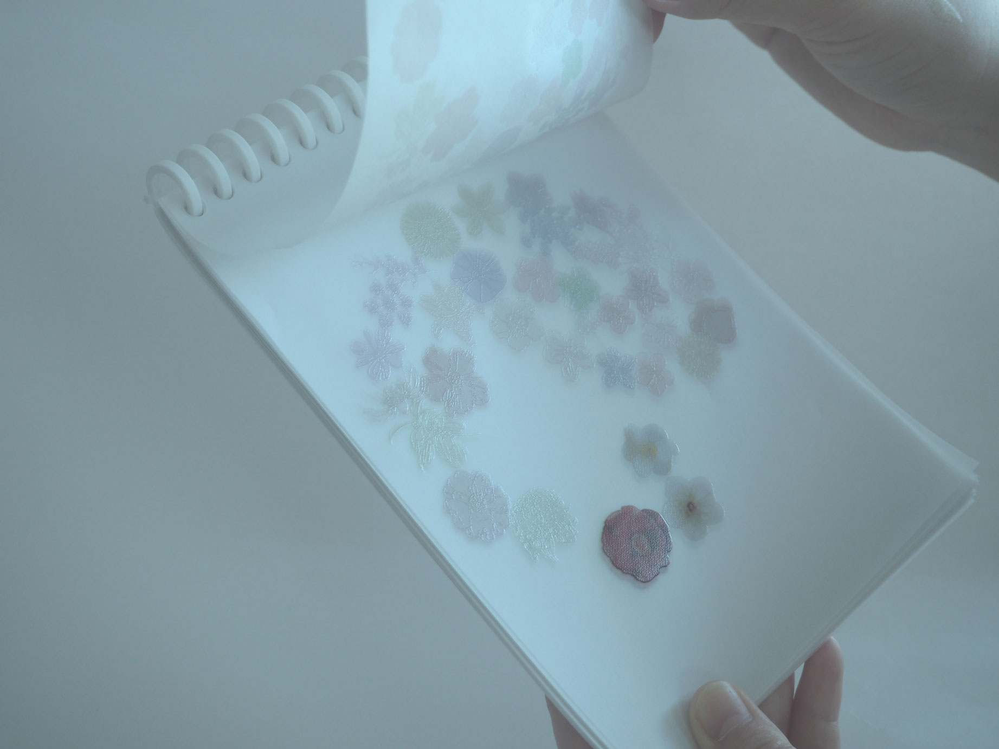
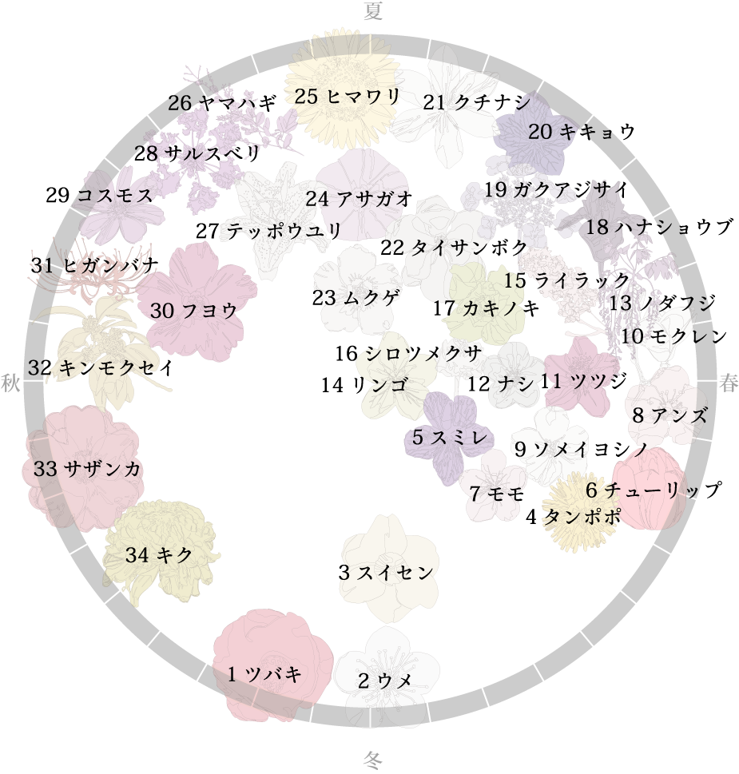
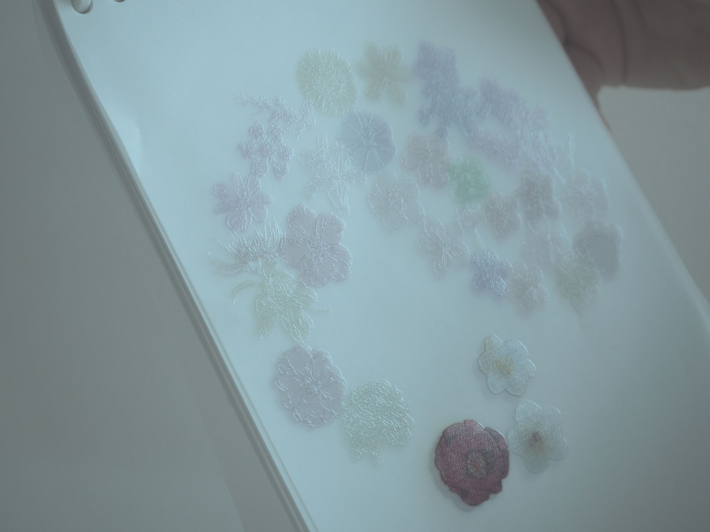
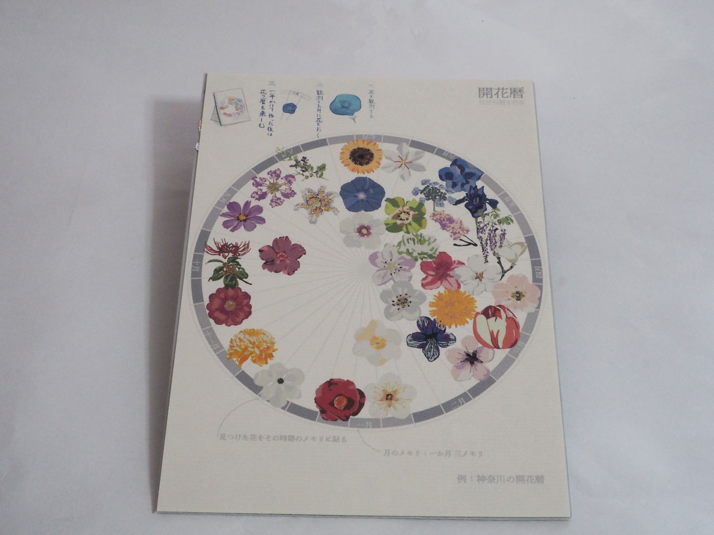
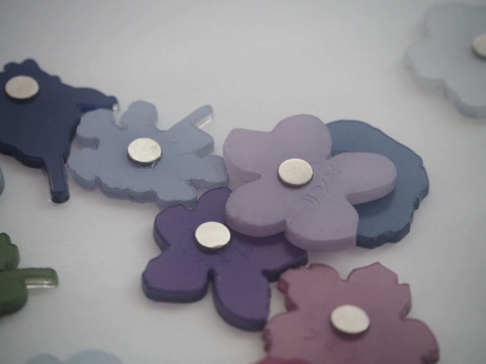

開花で季節の経過を知る。
花暦について
植物の開花時期はそれぞれ異なります。
神奈川で咲く花を順に並べて花暦（カレンダー）を製作しました。
- 
36枚をリング製本でまとめた写真
- 
一番下を１月として反時計回りに季節が進んでいく

A3から4枚出力できる
- 
咲いていない花をクリア印刷で表現した
制作の流れ
神奈川の花暦（カレンダー）
透過の表現を使い、前後に境目なくつながることを目指しました。 一年は循環しているので、リング製本にすることで、表現しました。
UVプリント 実験
ValueJet VJ-426UFというUVプリンタを使用しました。
「UVプリンターは紫外線で硬化するインクを使ったインクジェットのプリント方法です。通常、インクジェットプリントは専用の用紙に限りプリントができますが、UV インクは専用の用紙以外の様々な素材にプリントできることが大きな特徴です。」（https://avcon.sfc.keio.ac.jp/manual/fab/pdf/VJ-426UF_v1.pdf）
植物のサイクル
ツバキの種子（2021年7月撮影＠神奈川県）
次に植物のサイクルに注目しました。 図鑑では花の時期を切り取られて紹介されますが、日々変化・成長して存在しています。 こちらは最近撮影した写真です。 アサガオが咲いている一方で、ツバキは種子をつけています。
植物のサイクルの絵を作成
植物には、花芽ができ、開き、枯れ、種子ができるというサイクルがあります。 図鑑などでは切り捨てられてしまう変化の過程にスポットを当てた作品を作っています。 ３４種類の花の変化を過程を描きました。
展望
これらを絵をまとめてみたものです。 見開きで変遷をみれるものです。左から１月１日始まりで、右に時間が進んでいきます。背景の濃い緑は最高気温、薄い緑は最低気温のグラフです。このようなまとめ方もできたらなと思います。
自分で作る開花暦
共通化された暦に地域性を見出すには、自分の周りの花の開花に注目して暦を作ることがいいのではと思いました。 それを簡単にできるキットを作りました。
開花暦キットの写真
開花暦キットについて
トタンプレートでできた台紙にマグネットを貼り付けて作ります。中央の円は下部の１月から反時計回りに１２ヶ月を表しています。ペーパーマグネットのバージョンと、アクリルのマグネットのバージョンを作成しました。

- 
-
- 